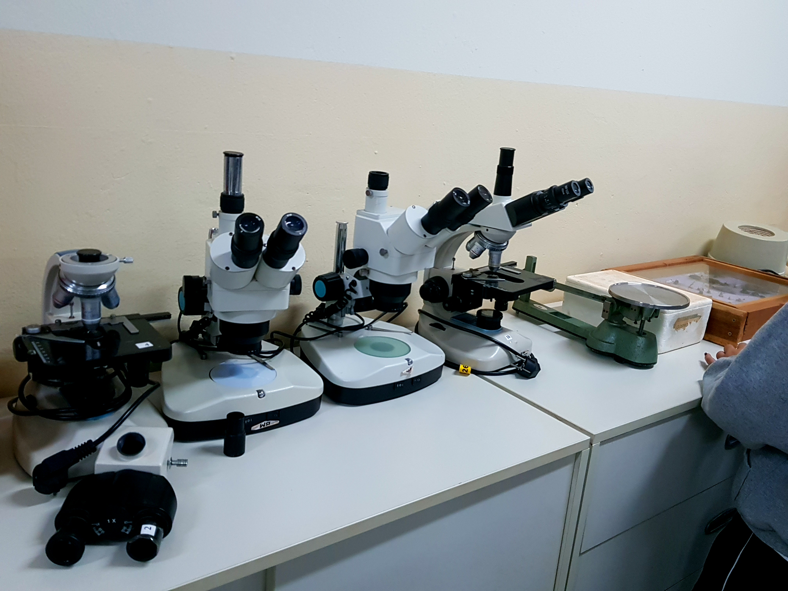

Colégio Monteiro Lobato
O Colégio Estadual Monteiro Lobato, localizado na cidade de Colorado, no estado do Paraná, Brasil, é uma instituição de ensino de grande importância na região. Fundado em 1970, o colégio carrega consigo uma história rica e uma trajetória de excelência educacional. O colégio recebeu o nome de Monteiro Lobato em homenagem ao renomado escritor, autor de obras clássicas da literatura infantil como "O Sítio do Picapau Amarelo". A escolha desse nome busca não apenas enaltecer a figura literária de Lobato, mas também incentivar o gosto pela leitura e estimular a imaginação dos estudantes. Ao longo dos anos, o Colégio Estadual Monteiro Lobato tem desempenhado um papel fundamental na formação acadêmica e cidadã dos jovens coloradenses. Sua proposta pedagógica busca desenvolver nos alunos não apenas o conhecimento teórico, mas também habilidades socioemocionais, éticas e críticas, preparando-os para os desafios do mundo contemporâneo.
O corpo docente do colégio é composto por professores dedicados e qualificados, que se empenham em proporcionar uma educação de qualidade, utilizando metodologias inovadoras e recursos tecnológicos. Além disso, a escola conta com uma estrutura física adequada, com salas de aula equipadas, laboratórios de ciências, biblioteca e espaços para atividades esportivas e culturais.
Além do ensino regular, o Colégio Estadual Monteiro Lobato oferece diversas atividades extracurriculares, como grupos de estudo, projetos de pesquisa, clubes de leitura, atividades esportivas e artísticas, buscando atender aos interesses e talentos dos estudantes, estimulando o protagonismo e a participação ativa na comunidade escolar.
A escola também promove eventos e projetos pedagógicos ao longo do ano, envolvendo a participação de toda a comunidade escolar. Essas iniciativas visam fortalecer os laços entre estudantes, professores, funcionários e pais, promovendo uma educação participativa e inclusiva.
Assim, o Colégio Estadual Monteiro Lobato, em Colorado, Paraná, desempenha um papel fundamental na educação da comunidade local, valorizando a formação integral dos estudantes e promovendo a construção de um futuro promissor para todos os que passam por suas salas de aula.
